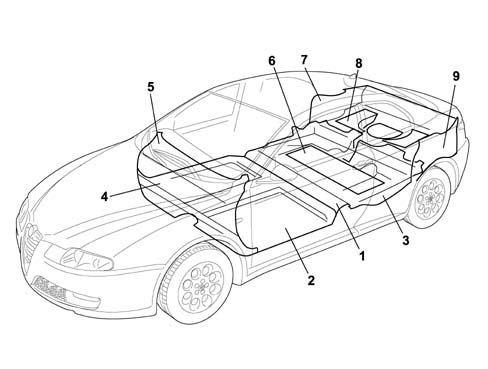

INTRODUCTION - MISCELLANEOUS BODYWORK
- Path
- Descriptions > 70 FITTINGS > 7095 MISCELLANEOUS BODYWORK > INTRODUCTION - MISCELLANEOUS BODYWORK
- Kind
- system description
- Applies to
- engines: 2.0 JTS, 3.2 V6, 1.9 JTD 16V; all production periods
- Interactive page
- https://sloeber94.github.io/elrnDB-aGt/en/#/125000444
Applies to: engines: 2.0 JTS, 3.2 V6, 1.9 JTD 16V; all production periods
SPECIFICATIONS
The car is fitted with insulating panels to reduce mechanical noise and insulate the passenger compartment against noise deriving from rolling and the external environment.
The luggage compartment base houses a spare wheel with tool kit. These are secured in a container which is fastened inside the rim by a device.
The spare wheel is covered by a sound-absorbent preformed cover. This is turn is covered by the carpet that lines the luggage compartment floor.
VARIOUS BODY INSULATION PANELS
The insulation panels are made out of sound-absorbent material secured by bosses or bonded to the body.
General view

1 - Floor carpet
2 - Front footboard insulation
3 - Rear footboard insulation
4 - Front facia insulation
5 - Upper facia insulation
6 - Rear underseat insulation
7 - Right side trim
8 - Load platform
9 - Left side trim